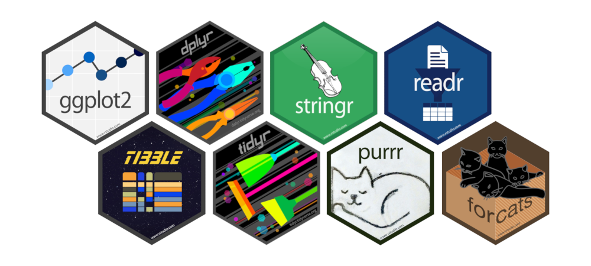

install.packages("tidyverse")6 Le tidyverse
6.1 Extensions
Le terme tidyverse est une contraction de tidy (qu’on pourrait traduire par “bien rangé”) et de universe. Il s’agit en fait d’une collection d’extensions conçues pour travailler ensemble et basées sur une philosophie commune.
Elles abordent un très grand nombre d’opérations courantes dans R (la liste n’est pas exhaustive) :
- visualisation
- manipulation des tableaux de données
- import/export de données
- manipulation de variables
- extraction de données du Web
- programmation
Un des objectifs de ces extensions est de fournir des fonctions avec une syntaxe cohérente, qui fonctionnent bien ensemble, et qui retournent des résultats prévisibles. Elles sont en grande partie issues du travail d’Hadley Wickham, qui travaille désormais pour RStudio.
6.2 Installation
tidyverse est également le nom d’une extension qu’on peut installer de manière classique, soit via le bouton Install de l’onglet Packages de RStudio, soit en utilisant la commande :
Cette commande va en fait installer plusieurs extensions qui constituent le “coeur” du tidyverse, à savoir :
ggplot2(visualisation)dplyr(manipulation des données)tidyr(remise en forme des données)purrr(programmation)readr(importation de données)tibble(tableaux de données)forcats(variables qualitatives)stringr(chaînes de caractères)lubridate(manipulation de dates)

De la même manière, charger l’extension avec :
library(tidyverse)Chargera l’ensemble des extensions précédentes.
Il existe d’autres extensions qui font partie du tidyverse mais qui doivent être chargées explicitement, comme par exemple readxl (pour l’importation de données depuis des fichiers Excel). La liste complète se trouve sur le site officiel du tidyverse.
Ce document est basé sur les versions d’extension suivantes :
#> ggplot2 3.5.1 dplyr 1.1.4
#> tibble 3.2.1 stringr 1.5.1
#> tidyr 1.3.1 forcats 1.0.0
#> readr 2.1.5 lubridate 1.9.4
#> purrr 1.0.26.3 tidy data
Le tidyverse est en partie fondé sur le concept de tidy data, développé à l’origine par Hadley Wickham dans un article de 2014 du Journal of Statistical Software.
Il s’agit d’un modèle d’organisation des données qui vise à faciliter le travail souvent long et fastidieux de nettoyage et de préparation préalable à la mise en oeuvre de méthodes d’analyse.
Les principes d’un jeu de données tidy sont les suivants :
- chaque variable est une colonne
- chaque observation est une ligne
- chaque type d’observation est dans une table différente
On verra plus précisément Chapitre 12 comment définir et rendre des données tidy avec l’extension tidyr.
Les extensions du tidyverse, notamment ggplot2 et dplyr, sont prévues pour fonctionner avec des données tidy.
6.4 tibbles
Une autre particularité du tidyverse est que ces extensions travaillent avec des tableaux de données au format tibble, qui est une évolution plus moderne du classique data frame du R de base. Ce format est fourni et géré par l’extension du même nom (tibble), qui fait partie du coeur du tidyverse. La plupart des fonctions des extensions du tidyverse acceptent des data frames en entrée, mais retournent un objet de classe tibble.
Contrairement aux data frames, les tibbles :
- n’ont pas de noms de lignes (rownames)
- autorisent des noms de colonnes invalides pour les data frames (espaces, caractères spéciaux, nombres…)1
- s’affichent plus intelligemment que les data frames : seules les premières lignes sont affichées, ainsi que quelques informations supplémentaires utiles (dimensions, types des colonnes…)
- ne font pas de partial matching sur les noms de colonnes2
- affichent un avertissement si on essaie d’accéder à une colonne qui n’existe pas
Pour autant, les tibbles restent compatibles avec les data frames. On peut ainsi facilement convertir un data frame en tibble avec as_tibble :
as_tibble(mtcars)
#> # A tibble: 32 × 11
#> mpg cyl disp hp drat wt qsec vs am gear carb
#> <dbl> <dbl> <dbl> <dbl> <dbl> <dbl> <dbl> <dbl> <dbl> <dbl> <dbl>
#> 1 21 6 160 110 3.9 2.62 16.5 0 1 4 4
#> 2 21 6 160 110 3.9 2.88 17.0 0 1 4 4
#> 3 22.8 4 108 93 3.85 2.32 18.6 1 1 4 1
#> 4 21.4 6 258 110 3.08 3.22 19.4 1 0 3 1
#> 5 18.7 8 360 175 3.15 3.44 17.0 0 0 3 2
#> 6 18.1 6 225 105 2.76 3.46 20.2 1 0 3 1
#> 7 14.3 8 360 245 3.21 3.57 15.8 0 0 3 4
#> 8 24.4 4 147. 62 3.69 3.19 20 1 0 4 2
#> 9 22.8 4 141. 95 3.92 3.15 22.9 1 0 4 2
#> 10 19.2 6 168. 123 3.92 3.44 18.3 1 0 4 4
#> # ℹ 22 more rowsSi le data frame d’origine a des rownames, on peut d’abord les convertir en colonnes avec rownames_to_columns :
d <- as_tibble(rownames_to_column(mtcars))
d
#> # A tibble: 32 × 12
#> rowname mpg cyl disp hp drat wt qsec vs am gear carb
#> <chr> <dbl> <dbl> <dbl> <dbl> <dbl> <dbl> <dbl> <dbl> <dbl> <dbl> <dbl>
#> 1 Mazda RX4 21 6 160 110 3.9 2.62 16.5 0 1 4 4
#> 2 Mazda RX4 … 21 6 160 110 3.9 2.88 17.0 0 1 4 4
#> 3 Datsun 710 22.8 4 108 93 3.85 2.32 18.6 1 1 4 1
#> 4 Hornet 4 D… 21.4 6 258 110 3.08 3.22 19.4 1 0 3 1
#> 5 Hornet Spo… 18.7 8 360 175 3.15 3.44 17.0 0 0 3 2
#> 6 Valiant 18.1 6 225 105 2.76 3.46 20.2 1 0 3 1
#> 7 Duster 360 14.3 8 360 245 3.21 3.57 15.8 0 0 3 4
#> 8 Merc 240D 24.4 4 147. 62 3.69 3.19 20 1 0 4 2
#> 9 Merc 230 22.8 4 141. 95 3.92 3.15 22.9 1 0 4 2
#> 10 Merc 280 19.2 6 168. 123 3.92 3.44 18.3 1 0 4 4
#> # ℹ 22 more rowsÀ l’inverse, on peut à tout moment convertir un tibble en data frame avec as.data.frame :
as.data.frame(d)
#> rowname mpg cyl disp hp drat wt qsec vs am gear carb
#> 1 Mazda RX4 21.0 6 160.0 110 3.90 2.620 16.46 0 1 4 4
#> 2 Mazda RX4 Wag 21.0 6 160.0 110 3.90 2.875 17.02 0 1 4 4
#> 3 Datsun 710 22.8 4 108.0 93 3.85 2.320 18.61 1 1 4 1
#> 4 Hornet 4 Drive 21.4 6 258.0 110 3.08 3.215 19.44 1 0 3 1
#> 5 Hornet Sportabout 18.7 8 360.0 175 3.15 3.440 17.02 0 0 3 2
#> 6 Valiant 18.1 6 225.0 105 2.76 3.460 20.22 1 0 3 1
#> 7 Duster 360 14.3 8 360.0 245 3.21 3.570 15.84 0 0 3 4
#> 8 Merc 240D 24.4 4 146.7 62 3.69 3.190 20.00 1 0 4 2
#> 9 Merc 230 22.8 4 140.8 95 3.92 3.150 22.90 1 0 4 2
#> 10 Merc 280 19.2 6 167.6 123 3.92 3.440 18.30 1 0 4 4
#> 11 Merc 280C 17.8 6 167.6 123 3.92 3.440 18.90 1 0 4 4
#> 12 Merc 450SE 16.4 8 275.8 180 3.07 4.070 17.40 0 0 3 3
#> 13 Merc 450SL 17.3 8 275.8 180 3.07 3.730 17.60 0 0 3 3
#> 14 Merc 450SLC 15.2 8 275.8 180 3.07 3.780 18.00 0 0 3 3
#> 15 Cadillac Fleetwood 10.4 8 472.0 205 2.93 5.250 17.98 0 0 3 4
#> 16 Lincoln Continental 10.4 8 460.0 215 3.00 5.424 17.82 0 0 3 4
#> [ reached 'max' / getOption("max.print") -- omitted 16 rows ]Là encore, on peut convertir la colonne rowname en “vrais” rownames avec column_to_rownames :
column_to_rownames(as.data.frame(d))
#> mpg cyl disp hp drat wt qsec vs am gear carb
#> Mazda RX4 21.0 6 160.0 110 3.90 2.620 16.46 0 1 4 4
#> Mazda RX4 Wag 21.0 6 160.0 110 3.90 2.875 17.02 0 1 4 4
#> Datsun 710 22.8 4 108.0 93 3.85 2.320 18.61 1 1 4 1
#> Hornet 4 Drive 21.4 6 258.0 110 3.08 3.215 19.44 1 0 3 1
#> Hornet Sportabout 18.7 8 360.0 175 3.15 3.440 17.02 0 0 3 2
#> Valiant 18.1 6 225.0 105 2.76 3.460 20.22 1 0 3 1
#> Duster 360 14.3 8 360.0 245 3.21 3.570 15.84 0 0 3 4
#> Merc 240D 24.4 4 146.7 62 3.69 3.190 20.00 1 0 4 2
#> Merc 230 22.8 4 140.8 95 3.92 3.150 22.90 1 0 4 2
#> Merc 280 19.2 6 167.6 123 3.92 3.440 18.30 1 0 4 4
#> Merc 280C 17.8 6 167.6 123 3.92 3.440 18.90 1 0 4 4
#> Merc 450SE 16.4 8 275.8 180 3.07 4.070 17.40 0 0 3 3
#> Merc 450SL 17.3 8 275.8 180 3.07 3.730 17.60 0 0 3 3
#> Merc 450SLC 15.2 8 275.8 180 3.07 3.780 18.00 0 0 3 3
#> Cadillac Fleetwood 10.4 8 472.0 205 2.93 5.250 17.98 0 0 3 4
#> Lincoln Continental 10.4 8 460.0 215 3.00 5.424 17.82 0 0 3 4
#> Chrysler Imperial 14.7 8 440.0 230 3.23 5.345 17.42 0 0 3 4
#> Fiat 128 32.4 4 78.7 66 4.08 2.200 19.47 1 1 4 1
#> [ reached 'max' / getOption("max.print") -- omitted 14 rows ]
Note
Les deux fonctions column_to_rownames et rownames_to_column acceptent un argument supplémentaire var qui permet d’indiquer un nom de colonne autre que le nom rowname utilisé par défaut pour créer ou identifier la colonne contenant les noms de lignes.